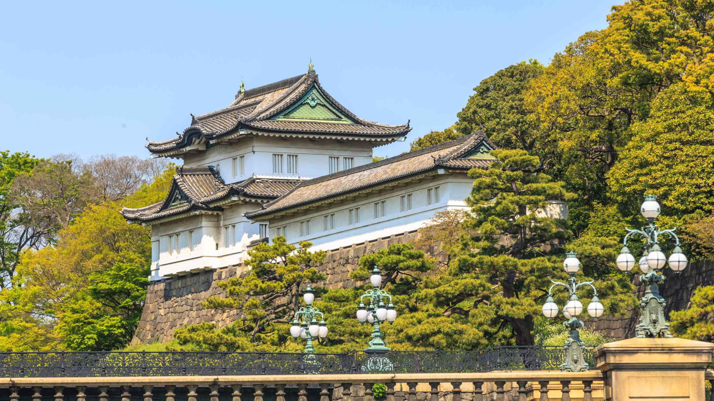
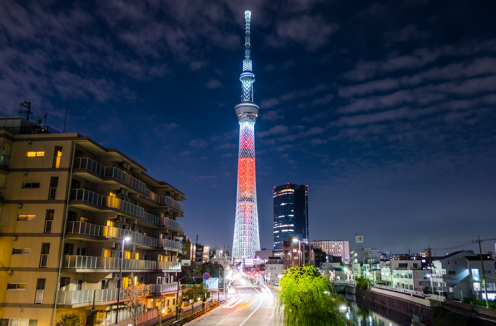
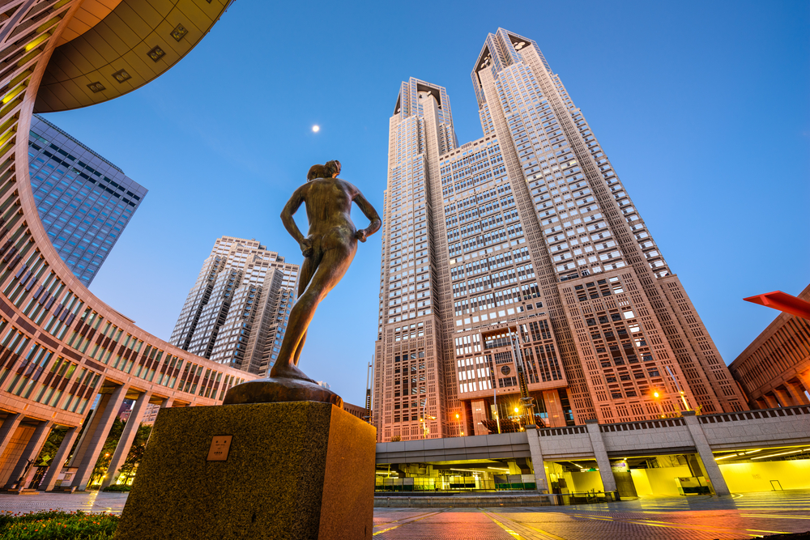
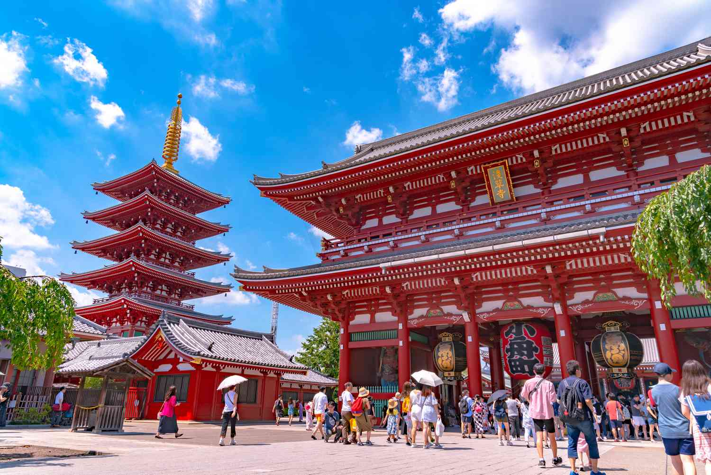

Monumentos
O Japão é famoso por seus monumentos históricos e culturais que refletem a rica herança do país.
Entre os mais notáveis estão o Templo Kinkaku-ji, ou Pavilhão Dourado, em Kyoto, com seu deslumbrante exterior coberto de folhas de ouro;
o Castelo de Himeji, um dos castelos mais bem preservados e icônicos do Japão, conhecido por sua beleza e complexidade arquitetônica;
e o Templo Senso-ji em Tóquio, o mais antigo templo budista da cidade, que atrai milhões de visitantes anualmente.
Outros monumentos importantes incluem o Santuário Itsukushima em Miyajima, famoso por seu portão torii flutuante,
e o Memorial da Paz de Hiroshima, um testemunho comovente das consequências da guerra e um símbolo de paz mundial.
Esses monumentos não apenas atraem turistas de todo o mundo, mas também são parte integral da identidade cultural e histórica do Japão.
Palácio imperial de Tóquio

Skytree em Tóquio

Sede do governo de Tóquio

Senso-ji em Tóquio

Templo do Pavilhão Dourado de Quioto